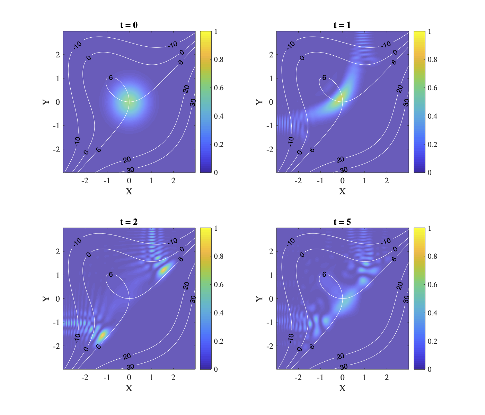

Jiaqi Leng
Welcome to Jiaqi Leng's homepage.
I am a second-year doctoral student in the Department of Mathematics (track: applied math) at the University of Maryland, College Park. I am also affiliated to QuICS. I am interested in quantum computing and quantum information. I'm fortunate to be advised by Xiaodi Wu.
Prior to Maryland, I graduated in June 2019 with Bachelor of Science (First Class Honours) from the Faculty of Science, the University of Hong Kong. My Bachelor's thesis is Turbulence in one spatial dimension, advised by Tak Kwong WONG. I was also a full-year exchange student at the University of Chicago from 2017 to 2018.
My name in Chinese: 冷佳奇.
Research
I aim to apply advanced mathematics to the design and understanding of quantum algorithms, especially quantum simulations and quantum machine learning. I am particularly interested in near-term and mid-term pratical applications of quantum computing in physics, chemistry, material sciences, and optimizations. I am also intrigued by quantum information geometry and its potential application to quantum algorithms.
*: equal contribution

Quantum Algorithms for Escaping from Saddle PointsChenyi Zhang*, Jiaqi Leng *, Tongyang Li. Contributed talk at the 24th Annual Conference on Quantum Information Processing (QIP 2021). [PDF]
Talks
Quantum algorithms for escaping from saddle point
February 2, 2021. QIP 2021. [Slides] [Video]
Quantum search algorithm and discrete Schrodinger dynamics
March 6, 2020. Student AMSC Seminar, UMD. [Slides]
Contact
(Due to the pandemic of COVID-19 and restricted operations in the University, the assignment of office has been delayed. I will update contact infomation once available.)
Office: TBA
Address: TBA
Email: jiaqil (at) umd.edu